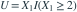
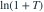
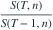
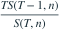
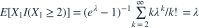
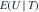
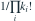
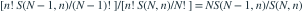

设  独立同分布，
独立同分布，![P_\lambda(X_i=k)=\lambda^k/[k!(e^\lambda-1)]](../practice/math/91d546e6f2984d8977f6.svg) ，
， ，
， 。记
。记  ，n是样本量。
，n是样本量。 表示把a个不同元素分成b个非空、无标号组的第二类Stirling数。已知
表示把a个不同元素分成b个非空、无标号组的第二类Stirling数。已知
独立同分布，，，。记 ，n是样本量。 表示把a个不同元素分成b个非空、无标号组的第二类Stirling数。已知 
对λ无偏，T完全充分。λ的UMVUE为哪个？- A

- B

（T>n时） - C

- D
我已思考，展开答案与解析
正确答案：C

。- Rao–Blackwell改进为

。给定T=N，对有序正整数分配按
加权。 - 在分子中把第一坐标减1，，所有坐标仍≥1，总和变成N−1。故条件期望是

。 - 例如n=3、N=5时，；N=n时S(n−1,n)=0，估计量为0。
易错提醒零截断泊松的均值不是λ，所以T/n不对λ无偏；UMVUE取0也不等于模型允许λ=0。
零截断泊松 · 回忆进阶重建 · 回忆UMVUE的进阶重建；独立推导并按总和分布验证期望
根据考后回忆原创重建，非已核实考试原题；模型条件与数字已明确补全。
查看参考来源